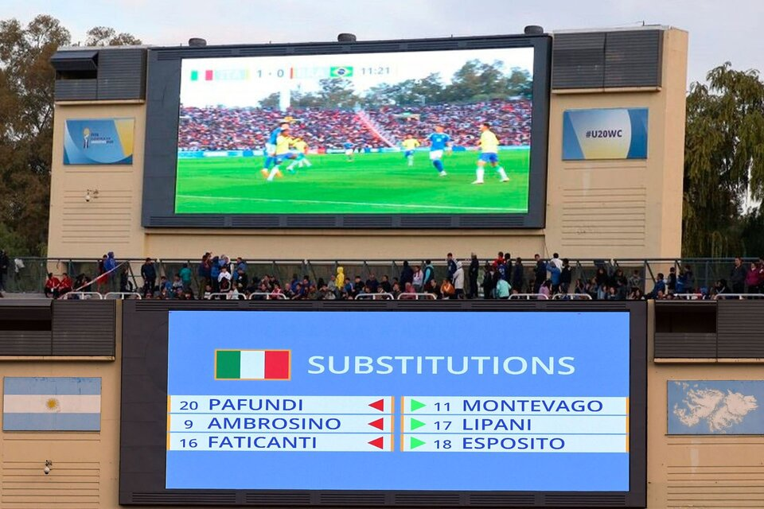

El gobernador radical Rodolfo Suárez mandó finalmente a sacar la cartelería de la FIFA que tapaba el símbolo de las Malvinas, pero se excusó en que no se trató de una acción deliberada. "No se puede minimizar lo que pasó", lo cruzó Guillermo Carmona. La Mesa de Deportes salió a cuestionar el silencio de Lammens. La historia detrás del cambio de nombre del estadio.